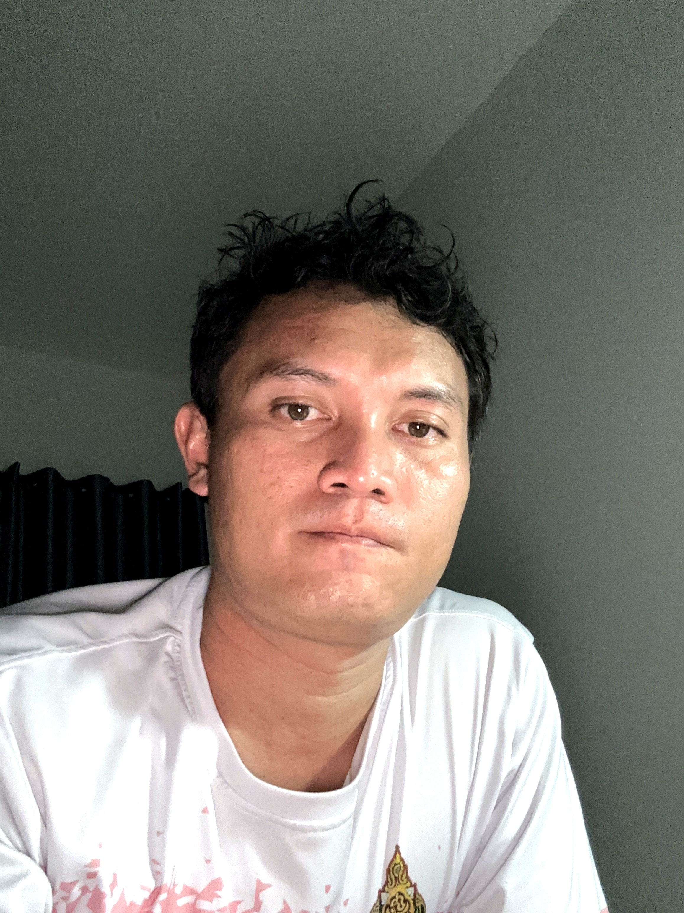

ครู วิทยฐานะครูชำนาญการ | โรงเรียนดอนท้าววิทยา
ข้าราชการครูสายงานการสอน สาขาคอมพิวเตอร์ศึกษา อายุราชการ 10 ปี มีความมุ่งมั่นในการพัฒนานวัตกรรมการจัดการเรียนรู้ที่เน้นผู้เรียนเป็นสำคัญ และนำเทคโนโลยีสารสนเทศมาประยุกต์ใช้เพื่อเพิ่มประสิทธิภาพการศึกษา